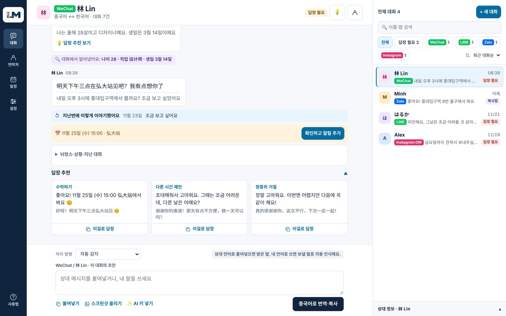
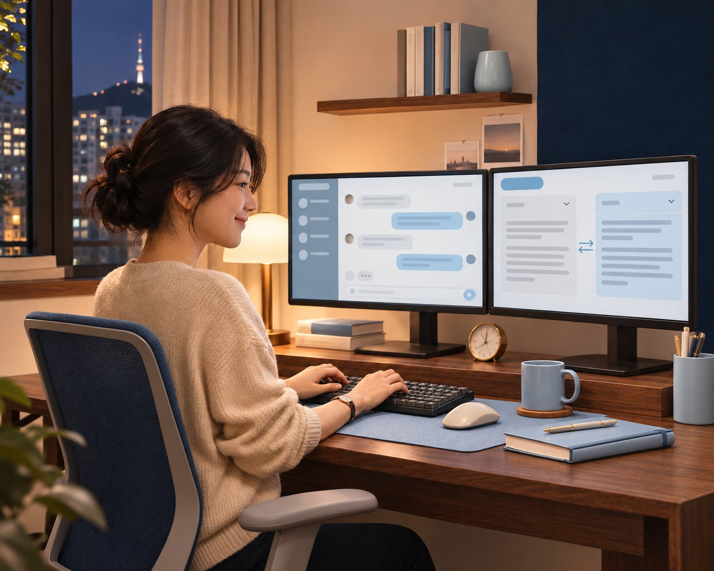
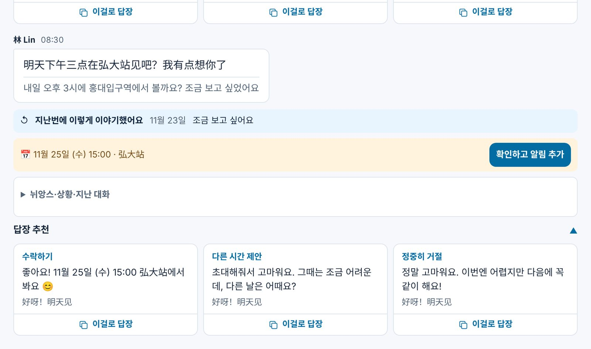
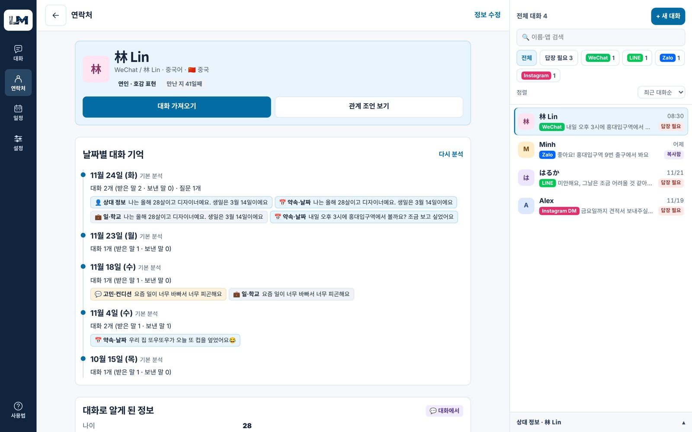
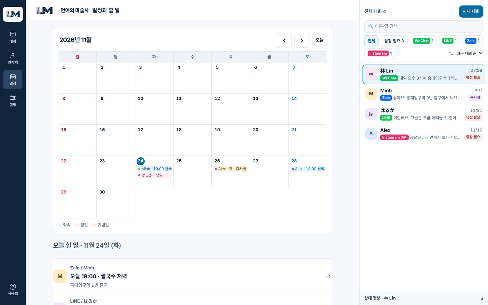
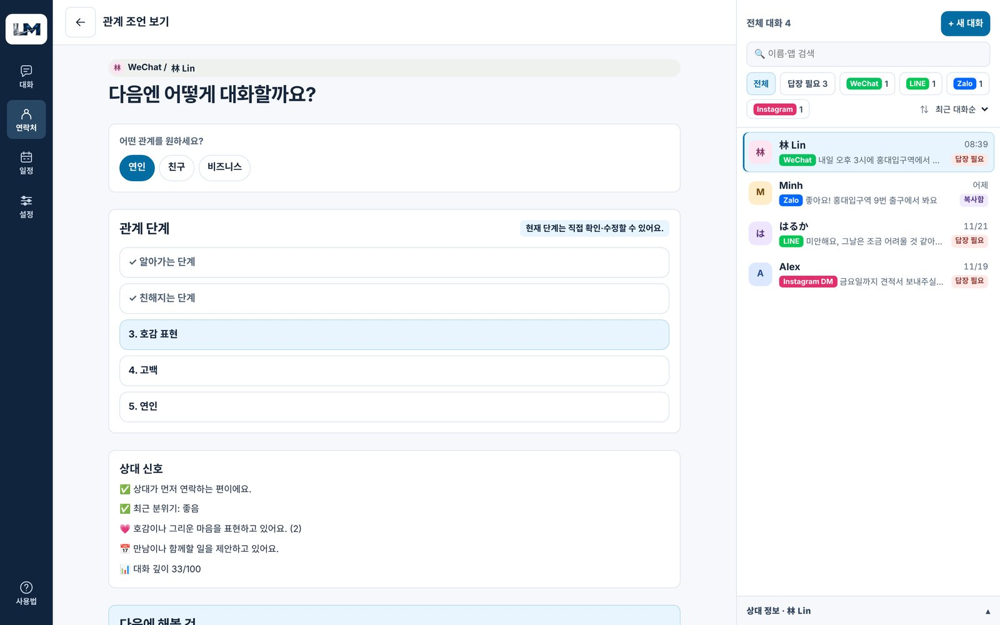
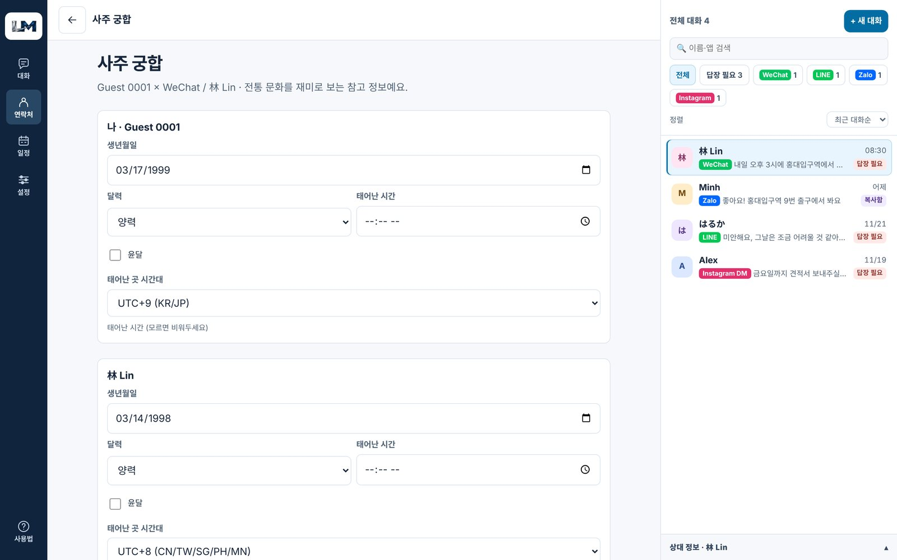
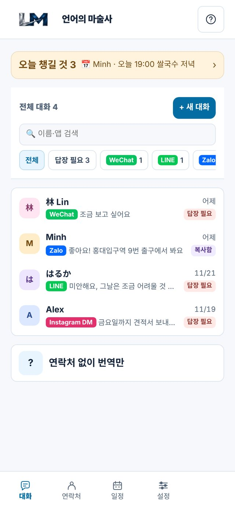
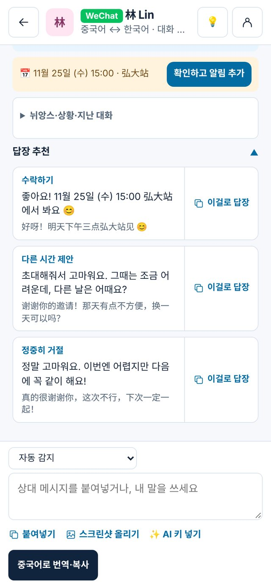

01 · PC 2모니터 작업 화면
한쪽엔 메신저, 한쪽엔 상담매직.
왼쪽 메뉴, 가운데 누적 대화, 오른쪽 대화 중인 상대 목록. 카톡·위챗·LINE을 색 배지로 구분하고, 답장 필요·새로 가져옴 상태를 한눈에 봅니다. 30~40명도 메신저별 필터와 검색으로 바로 찾아요.

카톡·위챗에서 받은 말을 붙여넣으세요. 번역과 말의 뉘앙스를 확인하고, 지난 대화를 이어가는 답장을 만들어 원래 메신저에서 보내세요.
게스트로 바로 시작 · 실명 가입 없음 · PC 2모니터와 모바일 모두 지원

上次说的那家咖啡店，你这周还想去吗？
지난번에 얘기한 카페, 이번 주에도 가고 싶어요?
想去！周六下午怎么样？
가고 싶어요! 토요일 오후 어때요?
好呀，周六四点在圣水站二号出口见？
좋아요, 토요일 4시에 성수역 2번 출구에서 만날까요?
好，四点在二号出口见！
좋아요, 4시에 2번 출구에서 봐요!
번역기를 껐다 켜고, 지난 대화를 다시 찾다 보면 답장 한 줄에 시간이 걸립니다. 상담매직은 상대별로 번역과 답장 초안을 한곳에 모아, 어디까지 이야기했는지 바로 보여줍니다.
대화 상대를 고르고 메신저에서 받은 말을 가져오세요. 스크린샷을 올려도 됩니다.
내 언어로 뜻과 말투를 읽고, 앞서 나눈 이야기나 약속을 확인하세요.
내 말로 쓰거나 추천 초안을 고르세요. 상대 언어로 만든 문장을 확인한 뒤 원래 메신저에 붙여넣으세요.
아래는 모두 상담매직의 실제 화면입니다.
왼쪽 메뉴, 가운데 누적 대화, 오른쪽 대화 중인 상대 목록. 카톡·위챗·LINE을 색 배지로 구분하고, 답장 필요·새로 가져옴 상태를 한눈에 봅니다. 30~40명도 메신저별 필터와 검색으로 바로 찾아요.

원문과 번역을 나란히 보여주고, 지난번에 나눈 이야기와 약속을 함께 띄웁니다. 추천 답장을 누르면 입력창에 채워지고, 확인 후 상대 언어로 복사됩니다.

대화를 날짜별로 정리해 생일·약속·좋아하는 것·고민을 기억합니다. 대화에 나이·생일·혈액형·MBTI·직업이 나오면 상대 정보가 자동으로 채워져요.

대화에서 찾은 약속, 생일, 만난 지 100일 같은 기념일을 달력에 표시하고 미리 알려드립니다.

말투·답장 속도·대화 깊이를 분석하고 지금 단계에서 할 말과 피할 말을 예문으로 알려줍니다.

사주·띠·별자리·혈액형·MBTI 궁합을 문화 콘텐츠로 즐기고, 나라별 호칭·선물·금기도 확인하세요.

목록에서 상대를 고르고, 대화방에서 붙여넣고, 추천 답장을 복사하세요. 대화방에서는 하단 메뉴를 숨겨 입력창에 공간을 줍니다.


팀장이 한국어로 지시하면 상담원이 고른 언어로 도착하고, 읽음과 답장을 팀장 화면에서 확인합니다.
팀장은 자기 팀 상담만 보고, 누가 언제 어떤 대화를 열었는지 모두 기록됩니다.
한국어로 쓰면 상담원마다 각자 언어로 도착하고, 읽음 시각이 남습니다.
상담원이 자기 언어로 답하면 팀장에게는 한국어로 보입니다.
팀 상담량, 안 읽은 지시, 확인 안 한 답장, 위험 대화와 열람 기록을 한 화면에서 봅니다.
가입 없이 바로 써보세요.
매일 대화하는 분께.
여러 사람과 깊게 이어가는 분께.
상담회사·외국인 고객상담 팀
게스트로 시작할 수 있습니다. 대화 기록을 입력하기 전 운영 열람 안내와 동의를 확인합니다.
메신저에서 텍스트를 복사해 가져오면 됩니다. 작성한 답장도 복사한 뒤 쓰던 메신저에서 직접 보냅니다.
앱 메뉴는 내 언어로 보고, 답장은 상대에 맞는 언어로 준비할 수 있습니다.
권한을 받은 운영자가 앱에 제출한 대화를 관리 목적으로 열람할 수 있습니다. 열람 시 관리자·대화·시각·사유가 기록됩니다.